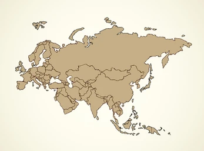

L'objectif de notre carte est de séparé les différentes équipes dans les coins pour que chacun puisse démarrer de son côté sans avoir à directement entamer des affrontements, ainsi chacun pourra sélectionner sa stratégie de jeux non pas à l'avance mais directement pendant le déroulement de la partie.
Nous aimerions faire différentes cartes histoire de complexifier les parties et éviter que les parties ne deviennent redondantes à la longue.
